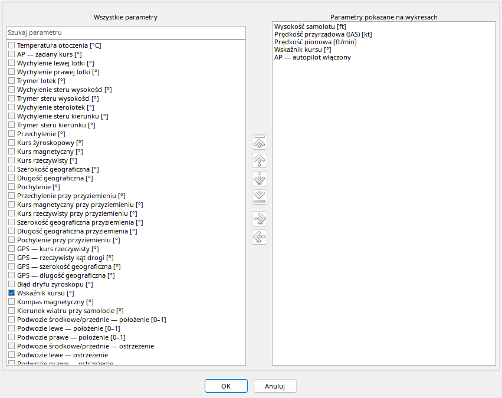

Lista po lewej przedstawia parametry dostêpne w bie¿¹cym kontekœcie, a prawa tylko uporz¹dkowany zestaw wykresów. Wyszukiwanie zawê¿a lew¹ listê; po dodaniu wybranych pozycji wyczyœæ filtr, je¿eli chcesz znaleŸæ inne grupy. Przyciski oraz przeci¹ganie pomiêdzy listami wykonuj¹ tê sam¹ operacjê pokazywania/ukrywania.
Aby zmieniæ kolejnoœæ, zaznacz pozycjê po prawej i u¿yj przesuniêcia góra/dó³ lub pocz¹tek/koniec. Ctrl podczas przeci¹gania w obrêbie listy wyœwietlanych s³u¿y do reorder; miejsce upuszczenia okreœla now¹ pozycjê. OK zatwierdza ca³y zestaw, Anuluj odrzuca edycjê. Zrzut ma pe³ny podstawowy katalog FDR, nie piêæ sztucznych pozycji; pe³ne zestawienie jest w rozdziale Katalog SimVar.
Okno rozdziela parametry dostêpne i uporz¹dkowan¹ listê wyœwietlanych.
| Opcja / czynnoœæ | Dzia³anie i ograniczenia |
|---|---|
| Szukaj | Fragment nazwy; wyczyœæ, aby wróciæ do ca³oœci. Filtr nie usuwa telemetrii. |
| Poka¿ / ukryj | Dodaje/usuwa wykres z prezentacji, bez zmiany lotu. |
| Drag miêdzy listami | Przenoœ, aby pokazaæ/ukryæ. Tylko zaakceptowany cel zmienia wybór; feedback wskazuje poprawnoœæ. |
| Kolejnoœæ | Góra/dó³/pocz¹tek/koniec lub Ctrl-drag w liœcie wyœwietlanych. Upuœæ miêdzy wierszami, aby okreœliæ miejsce. |
| OK / Anuluj | OK stosuje wybór i kolejnoœæ, Anuluj odrzuca zmiany okna. |
